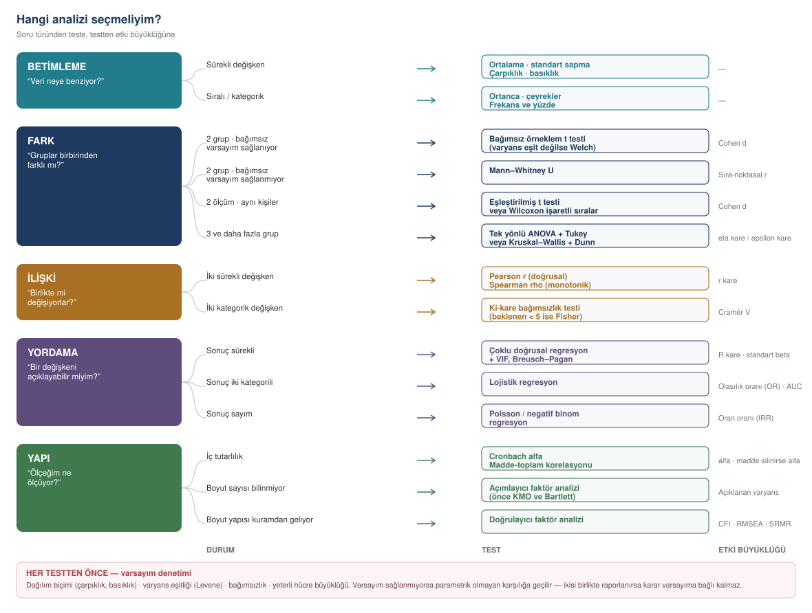
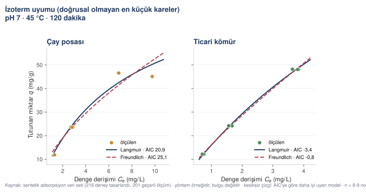
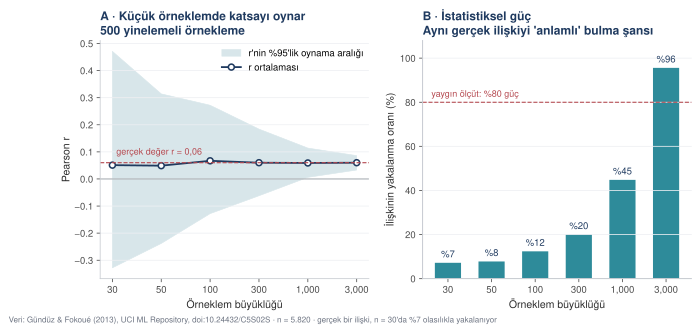

Hangi analizi seçmeliyim
Soru türünden teste, testten etki büyüklüğüne giden karar haritası. Varsayım denetimi, örneklem büyüklüğü, çoklu karşılaştırma ve raporlama disiplini.
Yanlış test, doğru veriden yanlış sonuç çıkarır. Bu bölüm, hangi sorunun hangi testle yanıtlandığını ve her testten önce neyin denetlenmesi gerektiğini gösteriyor.
Karar haritası
Analiz seçimi üç soruya bakar: sorunuzun türü, değişkenlerinizin ölçek düzeyi ve varsayımların sağlanıp sağlanmadığı. Aşağıdaki harita üçünü birleştiriyor.



Ölçek düzeyi, testi belirler
| Ölçek düzeyi | Ne demek | Örnek | Yapılabilen |
|---|---|---|---|
| Sınıflayıcı (nominal) | Sıralanamaz kategoriler | Fakülte, cinsiyet, etiket | Frekans, mod, ki-kare |
| Sıralayıcı (ordinal) | Sıralanır ama aralıklar eşit değil | Likert maddesi, katılım düzeyi (0–4) | Ortanca, Spearman, sıra temelli testler |
| Aralık/Oran (sürekli) | Aralıklar eşit | Yaş, saat, ölçek puanı | Ortalama, Pearson, t, ANOVA, regresyon |
Sekiz soru, sekiz test
Karar haritası soyut kalabilir. Aşağıda, 4. bölümdeki sekiz alandan gelen sorular ve her birinin gerektirdiği test var. Kendi sorunuza en çok benzeyen satırı bulun.
| Alan ve soru | Ne karşılaştırılıyor | Test | Etki büyüklüğü |
|---|---|---|---|
| Eğitim — Okuma atölyesine katılanların sınav puanı farklı mı? | İki bağımsız grubun ortalaması | Bağımsız örneklem t testi (dönem başı puan denetlenecekse ANCOVA) | Cohen d / kısmi eta kare |
| Fizik — Üç farklı katman kalınlığında dönüşüm verimi değişiyor mu? | Üç grubun ortalaması | Tek yönlü ANOVA + Tukey | Eta kare |
| Kimya — İki adsorban, üç farklı derişimde farklı mı davranıyor? | İki faktörün birlikte etkisi | İki faktörlü ANOVA (etkileşim terimiyle) | Kısmi eta kare |
| Makine — Isıl işlem yorulma ömrünü artırıyor mu? | İki grubun dağılımı, örneklem küçük | Mann–Whitney U (n < 20 ise) | Sıra-noktasal r |
| Tıp — Hatırlatma, ilaç uyumunu artırıyor mu? | Aynı hastalarda önce–sonra | Eşleştirilmiş t testi ya da Wilcoxon işaretli sıralar testi | Cohen d (eşleştirilmiş) / sıra-noktasal r |
| Ekonomi — Asgari ücret artışı istihdamı etkiliyor mu? | Zaman içinde, başka etkenler sabitken | Panel veri regresyonu (sabit etkiler) | Standartlaştırılmış beta |
| Tarih — Eğitim kurumlarına ayrılan yer dönemle değişti mi? | İki dönemin oran dağılımı | Ki-kare ya da oran karşılaştırması | Cramér V / Cohen h |
| İlahiyat — Niteleme sıklığı mezhebe göre değişiyor mu? | İki grubun kategorik dağılımı | Ki-kare bağımsızlık testi | Cramér V |
Varsayım denetimi
Parametrik testler (t testi, ANOVA, Pearson korelasyonu, regresyon) verinin dağılımı hakkında belirli kabullere dayanır. Parametrik olmayan testler bu kabulleri yapmaz; sayıların kendisi yerine sıralarını kullanır. Her parametrik testin varsayımları vardır ve bunları denetlemek ayrı bir analiz değil, analizin parçasıdır.
Varsayım 1
Dağılım biçimi
Kolmogorov–Smirnov ve Shapiro–Wilk testleri normalliği sınar: anlamlı bir sonuç "dağılım normal değil" demektir. Büyük örneklemde bu testler, uygulamada hiç önemi olmayan küçücük sapmalarda da anlamlı çıkar. Bu yüzden karar yalnız p değerine değil, çarpıklık ve basıklık katsayılarına da dayandırılır. Çarpıklık dağılımın bir yana yatıp yatmadığını, basıklık ise tepesinin normalden sivri mi yayvan mı olduğunu gösterir; ikisinin de −1 ile +1 arasında kalması çoğu uygulamada kabul edilir, ±2'ye kadar tolere edilir.
Varsayım 2
Varyans eşitliği
Levene testi grupların yayılımının benzer olup olmadığına bakar. Sağlanmıyorsa t testinde Welch düzeltmesi, ANOVA'da Welch ya da Alexander–Govern düzeltmesi kullanılır. Bu düzeltmeler, varsayım sağlandığında da sonucu bozmaz; yöntem yazınında t testinin varsayılanı olarak önerilmelerinin nedeni budur.
Varsayım 3
Bağımsızlık
Gözlemler birbirinden bağımsız olmalı. Aynı öğrencinin üç dersi değerlendirmesi, aynı hastadan üç ölçüm alınması bağımsız değildir. Bu durumda karma etki modelleri (çok düzeyli modeller) gerekir; sıradan ANOVA standart hataları küçük tahmin eder.
Varsayım 4
Yeterli hücre büyüklüğü
Ki-kare testinde beklenen frekansı 5'ten küçük hücre oranı %20'yi aşmamalı. Aşıyorsa kategoriler birleştirilir ya da Fisher kesin testi kullanılır.
ROL İstatistik danışmanısın. Görevin analizi yapmak değil, analizin PLANINI kurmak ve bu planın gerekçesini yazmak. ARAŞTIRMA SORULARI [sorularınızı numaralandırarak yazın] VERİ — Gözlem sayısı: [n] — Değişkenler: her biri için [ad] | [ölçek düzeyi] | [kaç düzey / hangi aralık] | [eksik oranı] — Gözlemler bağımsız mı: [evet / hayır — hayırsa neden] — Örnekleme yöntemi: [...] GÖREV Her araştırma sorusu için bir analiz planı yaz. HER SORU İÇİN 1. Hangi test — adıyla 2. Neden bu test — soru türü, ölçek düzeyi ve grup sayısına dayanarak, iki cümle 3. Hangi varsayımlar — her biri nasıl denetlenecek, hangi testle 4. Varsayım sağlanmazsa — alternatif test adı 5. Hangi etki büyüklüğü — adı ve yorum eşikleri 6. Rapor cümlesi şablonu — bulguyu yazarken kullanılacak cümle kalıbı, yerleri boş bırakılmış hâlde AYRICA — Çoklu karşılaştırma düzeltmesi gerekiyor mu? Gerekiyorsa hangisi ve neden. — Hangi soru için örneklemim yetersiz olabilir? Kaba bir güç değerlendirmesi yap: beklenen etki büyüklüğü orta düzeydeyse mevcut n bunu yakalar mı? SINIRLAR — Analizi YAPMA. Sayı üretme. Bu bir plandır. — Veride olmayan bir değişkene dayanan plan önerme. — "Duruma göre değişir" deyip geçme; bir test seç ve gerekçelendir. Gerçekten iki seçenek varsa ikisini de yaz ve hangisini hangi koşulda seçeceğimi söyle. DENETİM Planın sonunda: her araştırma sorusunun bir analiz planı var mı? Soru numaralarını ve karşılık gelen testleri tek tabloda listele.
ROL
İstatistik danışmanısın. Görevin analizi yapmak değil, analizin
PLANINI kurmak ve bu planın gerekçesini yazmak.
ARAŞTIRMA SORULARI
S1. Çay posasından elde edilen aktif karbon ile ticari aktif karbon
arasında boyar madde giderim verimi bakımından fark var mı?
S2. Giderim verimi başlangıç derişimine göre değişiyor mu, bu
değişim iki malzemede aynı mı?
S3. pH, giderim verimini etkiliyor mu?
S4. Adsorpsiyon verisi hangi izoterm modeline daha iyi uyuyor:
Langmuir mi Freundlich mi?
VERİ
— Gözlem sayısı: 201 (tasarım 216 deney öngörüyordu: 2 malzeme ×
3 derişim × 3 pH × 2 sıcaklık × 2 temas süresi × 3 tekrar;
temizleme sonrası 201 geçerli ölçüm kaldı). Tasarım tam
faktöriyel ama tekrar sayıları bakımından dengesiz.
— Değişkenler:
adsorban | kategorik, 2 düzey (çay posası / ticari)
baslangic_derisim | sürekli, 3 düzey (25, 50, 100 mg/L)
pH | sürekli, 3 düzey (3, 7, 10)
sicaklik | sürekli, 2 düzey (25, 45 °C)
temas_suresi | sürekli, 2 düzey (60, 120 dk)
tekrar_no | 1–3
giderim_verimi | sürekli, % — sonuç değişkeni
q_kapasite | sürekli, mg/g — ikinci sonuç değişkeni
— Gözlemler bağımsız mı: Evet. Her satır ayrı bir deney şişesi.
Ancak aynı malzeme partisinden alınan numuneler ortak bir
hazırlama sürecini paylaşıyor.
— Örnekleme yöntemi: deney tasarımı, rastgele sıra ile yürütüldü.
GÖREV
Her araştırma sorusu için bir analiz planı yaz.
HER SORU İÇİN
1. Hangi test — adıyla
2. Neden bu test — soru türü, ölçek düzeyi ve grup sayısına
dayanarak, iki cümle
3. Hangi varsayımlar — her biri nasıl denetlenecek, hangi testle
4. Varsayım sağlanmazsa — alternatif test adı
5. Hangi etki büyüklüğü — adı ve yorum eşikleri
6. Rapor cümlesi şablonu — bulguyu yazarken kullanılacak cümle
kalıbı, yerleri boş bırakılmış hâlde
AYRICA
— Çoklu karşılaştırma düzeltmesi gerekiyor mu? Gerekiyorsa hangisi
ve neden.
— Hangi soru için örneklemim yetersiz olabilir? Kaba bir güç
değerlendirmesi yap.
— S4 bir hipotez testi değil, model uyumu karşılaştırmasıdır.
Bunun nasıl raporlanacağını ayrıca yaz: R kare yeterli mi, AIC
gerekir mi, artık grafikleri nasıl sunulur?
BU TASARIMA ÖZGÜ DİKKAT
— Tam faktöriyel tasarımda etkileşim terimleri var. S2 aslında bir
etkileşim sorusu (malzeme × derişim). Bunu ayrıca belirt.
— Aynı partiden gelen numuneler tam bağımsız sayılabilir mi? Parti
etkisi varsa ne yapılmalı?
SINIRLAR
— Analizi YAPMA. Sayı üretme. Bu bir plandır.
— Veride olmayan bir değişkene dayanan plan önerme.
— "Duruma göre değişir" deyip geçme; bir test seç ve
gerekçelendir.
— İzoterm modellerini doğrusallaştırarak uydurmayı önerme;
doğrusallaştırma hata yapısını bozar. Doğrusal olmayan regresyon
öner.
DENETİM
Planın sonunda: her araştırma sorusunun bir analiz planı var mı?
Soru numaralarını ve karşılık gelen testleri tek tabloda listele.- Boyut
- 201 gözlem · 12 sütun · 5 analiz adımı
- Pakette
- adsorpsiyon_temiz.csv · 15_analiz_adsorpsiyon.py · 16_sekiller_adsorpsiyon.py · adsorpsiyon_analiz.txt · adsorpsiyon_analiz.json · adsorpsiyon_anova.csv · adsorpsiyon_ozet.csv
Analizi yapan betik, ürettiği sayılar ve şekilleri çizen betik. Tümü
indirilebilir; python 15_analiz_adsorpsiyon.py veri/kimya cikti
komutu bu sayfadaki bütün sayıları yeniden üretir.
ADSORPSİYON VERİSİ — ANALİZ SONUÇLARI
==========================================================================
!!! SENTETİK VERİ. Bu sayılar bir bulgu değil, yöntem
örneğidir. Hiçbiri alıntılanamaz. !!!
Gözlem sayısı: 201
Tasarım: 2 adsorban × 3 pH × 2 sıcaklık × 3 derişim × 2 süre
ADIM 0 — İLK KURULUM ve NEDEN İŞE YARAMADIĞI
--------------------------------------------------------------------------
Analizi ilk kurduğumuzda yalnız ilgi konusu üç faktörü
modele koyduk: adsorban, pH, sıcaklık. Başlangıç derişimi
ile temas süresini dışarıda bıraktık — 'onlar araştırma
sorusunun konusu değil' diye düşündük. Sonuç şöyle çıktı:
Kaynak KT sd F p η²p
adsorban 7,5 1 0,04 0,849 0,000
pH 278,9 2 0,67 0,511 0,007
sıcaklık 0,3 1 0,00 0,968 0,000
adsorban × pH 9,1 2 0,02 0,978 0,000
adsorban × sıcaklık 6,8 1 0,03 0,857 0,000
pH × sıcaklık 19,9 2 0,05 0,953 0,001
adsorban × pH × sıcaklık 3,1 2 0,01 0,993 0,000
Hata 39.147,3 189 — — —
Hiçbir etki anlamlı değil, bütün etki büyüklükleri sıfıra
yakın. Oysa çay posası ile ticari kömürün farklı
davrandığını betimsel tabloda zaten görüyorduk.
Nedeni şu: q, başlangıç derişimine çok güçlü bağlıdır.
25 mg/L'de yaklaşık 11 mg/g, 100 mg/L'de yaklaşık 45 mg/g
tutunuyor. Bu farkı modele koymazsanız, o varyans 'hata'
sayılır ve F oranının paydasını şişirir. Payda şişince
bütün F değerleri birin altına düşer.
Çözüm, deney tasarımı dilinde BLOKLAMA: kontrol edilen
ama ilgi konusu olmayan faktörler modele ana etki olarak
girer, etkileşimleri sorulmaz. Böylece varyansları hata
teriminden çıkar. Aşağıdaki bütün adımlar bu kurulumla.
ADIM 1 — VARSAYIM DENETİMİ
--------------------------------------------------------------------------
Neden bu adım: ANOVA, hata teriminin yaklaşık normal
dağıldığını ve grupların varyanslarının benzer olduğunu
varsayar. Varsayım tutmazsa F de p de güvenilmez olur.
Shapiro-Wilk (model artıkları): W = 0,8657, p = 0,0000
→ Artıklar normallikten sapıyor.
Şüpheli dönem dışarıda bırakıldığında aynı sınama:
W = 0,9219, p = 0,0000
W değeri 0,866 → 0,922
yükseliyor. Yani normallikten sapmanın büyük bölümü
cihaz arızası dönemindeki kaymış okumalardan geliyor.
Sapma hâlâ anlamlı; n = 201 gibi örneklemlerde
Shapiro-Wilk küçük sapmaları da yakalar. F sınaması
bu ölçekte normallik sapmalarına karşı dayanıklıdır,
ama bulgular Adım 5'te şüpheli dönem olmadan da
yineleniyor.
Levene (36 hücre, medyan merkezli): W = 3,343, p = 0,0000
→ Varyanslar eşit DEĞİL.
Sapmanın nereden geldiğini aramak gerekiyor; 'varsayım
tutmadı' demek tek başına bir şey öğretmez. Aynı sınamayı
her derişim düzeyi İÇİNDE ayrı ayrı yapalım:
C0 = 25 mg/L: W = 1,331, p = 0,2339 · hücre SS aralığı 0,05-0,28 mg/g
C0 = 50 mg/L: W = 2,230, p = 0,0246 · hücre SS aralığı 0,12-0,60 mg/g
C0 = 100 mg/L: W = 1,759, p = 0,0850 · hücre SS aralığı 0,33-2,25 mg/g
Hücre standart sapması, hücre ortalamasıyla birlikte
büyüyor mu: r = 0,343, p = 0,0034 (n = 71 hücre).
Tablo şunu söylüyor: 25 mg/L'de hücre içi standart sapma 0,05-0,28 mg/g iken,
100 mg/L'de 0,33-2,25 mg/g'a çıkıyor.
Yani varyans eşitsizliği karşılaştırdığımız gruplar arasında
değil, derişim düzeyleri arasında. Nedeni ölçüm hatasının
çarpımsal olması: spektrofotometre okuması yüzde cinsinden
sapar, mutlak cinsten değil. Yüksek derişimde aynı yüzde
daha büyük bir mg/g farkı demektir.
Bu, modeli kurma biçimimizi doğruluyor: derişim modelde
blok olarak duruyor, dolayısıyla her derişim düzeyi kendi
içinde karşılaştırılıyor. Blok içi Levene sınamaları üç
düzeyde de ya anlamsız ya sınırda; karşılaştırmaların
yapıldığı yerde varyanslar yeterince benzer.
ADIM 2-3 — BLOKLANMIŞ ANOVA ve ETKİ BÜYÜKLÜĞÜ
--------------------------------------------------------------------------
Neden bu test: üç faktörün etkisini ayrı ayrı VE birlikte
sınamak gerekiyor. Üç ayrı t testi etkileşimi göremez;
oysa 'ticari kömürün üstünlüğü pH'a bağlı mı' sorusu tam
olarak bir etkileşim sorusudur.
Model: q_mgG ~ C(adsorban) * C(pH) * C(sicaklik_C) + C(baslangic_derisim_mgL) + C(temas_suresi_dk)
Açıklanan varyans: R² = 0,9960
Kaynak KT sd F p η²p
adsorban 79,8 1 95,00 <0,001 0,338
pH 176,1 2 104,76 <0,001 0,530
sıcaklık 9,2 1 10,89 0,001 0,055
başlangıç derişimi (blok) 38.916,4 2 23.152,69 <0,001 0,996
temas süresi (blok) 21,0 1 24,94 <0,001 0,118
adsorban × pH 10,0 2 5,96 0,003 0,060
adsorban × sıcaklık 1,5 1 1,74 0,189 0,009
pH × sıcaklık 0,8 2 0,50 0,605 0,005
adsorban × pH × sıcaklık 0,5 2 0,28 0,757 0,003
Hata 156,3 186 — — —
Kısmi eta kare eşikleri (Cohen 1988): 0,01 küçük · 0,06 orta · 0,14 büyük
Anlamlı bulunan terimler (bloklar hariç):
adsorban: F(1, 186) = 95,00, p < 0,001, η²p = 0,338
pH: F(2, 186) = 104,76, p < 0,001, η²p = 0,530
sıcaklık: F(1, 186) = 10,89, p = 0,001, η²p = 0,055
adsorban × pH: F(2, 186) = 5,96, p = 0,003, η²p = 0,060
Etkileşim terimi anlamlı çıktığında ana etkiler tek başına
yorumlanmaz. adsorban × pH anlamlı olduğu için 'ticari
kömür daha iyidir' demek eksik kalır; doğru ifade 'ticari
kömürün üstünlüğü pH düzeyine göre değişir'.
Etkileşimin okunuşu — pH düzeyine göre adsorban farkı:
pH 3: çay posası 25,05 mg/g · ticari 25,09 mg/g · fark 0,04 mg/g
pH 7: çay posası 27,65 mg/g · ticari 27,75 mg/g · fark 0,10 mg/g
pH 10: çay posası 27,06 mg/g · ticari 28,00 mg/g · fark 0,94 mg/g
Farkın pH 3'te 0,04 mg/g'dan pH 10'da 0,94 mg/g'a çıkması
etkileşimin yönünü gösteriyor: ticari kömürün üstünlüğü
yalnız yüksek pH'ta belirginleşiyor. Ortalamalar üç
derişim ve iki süre üzerinden alındığı için mutlak
büyüklükler bastırılmış görünür; sınamanın kendisi
bloklanmış modelde yapıldı.
Post hoc — pH düzeyleri arası Tukey HSD:
(pH üç düzeyli; ANOVA 'bir fark var' der, hangi ikilinin
farklı olduğunu söylemez. Hata terimi bloklanmış modelden
alındı: KO_hata = 0,8404, sd = 186.)
pH 3.0 - pH 7.0: fark = -2,62 mg/g, q = 23,13, p = <0,001
pH 3.0 - pH 10.0: fark = -2,47 mg/g, q = 21,91, p = <0,001
pH 7.0 - pH 10.0: fark = 0,16 mg/g, q = 1,41, p = 0,577
kod/16_sekiller_adsorpsiyon.py
Dosya: k02_anova_kiyas.svg
· PNG sürümü


ADIM 4 — İZOTERM MODELLERİ
--------------------------------------------------------------------------
Neden bu adım: ANOVA 'fark var mı' sorusunu yanıtlar ama
mekanizma hakkında bir şey söylemez. İzoterm uyumu,
tutunmanın tek katmanlı mı (Langmuir) yoksa heterojen
yüzeyde mi (Freundlich) olduğuna dair kanıt sunar.
Her iki model pH 7, 45 °C, 120 dk koşulunda uyduruldu;
izoterm tanımı gereği tek sıcaklık ve tek pH gerektirir.
Çay posası (n = 8 nokta):
Langmuir : qmax = 88,0 mg/g · KL = 0,1364 L/mg
R² = 0,9575 · AIC = 20,9 · RMSE = 2,87 mg/g
Freundlich: KF = 12,30 · n = 1,58
R² = 0,9276 · AIC = 25,1 · RMSE = 3,75 mg/g
Daha iyi uyan: Langmuir (AIC farkı 4,3)
Ticari kömür (n = 9 nokta):
Langmuir : qmax = 176,4 mg/g · KL = 0,0997 L/mg
R² = 0,9980 · AIC = -3,4 · RMSE = 0,66 mg/g
Freundlich: KF = 16,15 · n = 1,21
R² = 0,9974 · AIC = -0,8 · RMSE = 0,76 mg/g
Daha iyi uyan: Langmuir (AIC farkı 2,5)
Doğrusallaştırma neden önerilmedi
(a) Dönüştürülmüş ölçekteki R² karşılaştırılamaz.
Doğrusallaştırılmış uyumun R²'si, dönüştürülmüş değişken
üzerinde hesaplanır: Langmuir için Ce/q, Freundlich için
ln q. Bunlar farklı şeyleri ölçer; iki R² aynı tabloda
yan yana konamaz. Aynı parametrelerle özgün ölçekte
(mg/g) yeniden hesaplandığında tablo şöyle:
Adsorban yöntem Langmuir R² Freundlich R² seçim
Çay posası doğrusal olmayan 0,9575 0,9276 Langmuir
doğrusallaştırılmış 0,9552 0,9087 Langmuir
Ticari doğrusal olmayan 0,9980 0,9974 Langmuir
doğrusallaştırılmış 0,9980 0,9970 Langmuir
Özgün ölçeğe getirildiğinde iki yöntem de Langmuir'i
seçiyor. Dönüştürülmüş ölçekteki R² ile bakılsaydı
Freundlich kazanıyordu — yani sonucu değiştiren şey
modelin kendisi değil, R²'nin hangi ölçekte
hesaplandığıydı.
(b) Doğrusallaştırma parametreleri kaydırıyor.
Adsorban Parametre doğ. olmayan doğrusallaş. fark
Çay posası qmax (mg/g) 87,954 91,893 %4,5
KL (L/mg) 0,136 0,123 %-10,1
KF 12,299 10,525 %-14,4
n 1,584 1,373 %-13,3
Ticari qmax (mg/g) 176,435 174,302 %-1,2
KL (L/mg) 0,100 0,101 %1,5
KF 16,153 15,907 %-1,5
n 1,211 1,185 %-2,1
q'daki eşit dağılmış ölçüm hatası Ce/q'ya taşındığında
küçük q değerlerinde büyür. En küçük kareler her noktaya
eşit ağırlık verdiği için düşük derişimli noktalar hak
ettiğinden fazla ağırlık kazanır.
(c) Tahminler gerçek değerlere ne kadar yakın?
Bu veri sentetik olduğu için üretim modelinin gerçek
parametrelerini biliyoruz. Gerçek bir çalışmada bu denetim
yapılamaz; burada yapılabiliyor ve öğretici bir şey
gösteriyor.
Adsorban Parametre gerçek tahmin %95 güven aralığı kapsıyor mu
Çay posası qmax (mg/g) 148,0 88,0 [52,2 – 123,7] HAYIR
KL (L/mg) 0,0671 0,1364 [0,0377 – 0,2352] evet
Ticari qmax (mg/g) 176,0 176,4 [137,8 – 215,0] evet
KL (L/mg) 0,1000 0,0997 [0,0712 – 0,1282] evet
Ticari kömürde tahminler gerçeğe çok yakın. Çay posasında
qmax tahmini gerçeğin epey altında ve güven aralığı
gerçek değeri KAPSAMIYOR. Nedeni yöntem değil, deney
aralığı: çay posasının denge derişimleri 1,3-9,8 mg/L
arasında kalıyor. En yüksek derişimde bile kapasitenin
ancak %57 kadarı doluyor; izoterm doygunluk
bölgesine girmiyor. qmax doygunluk düzeyidir, ulaşılmamış
bir düzey veriden güvenilir biçimde çıkarılamaz.
Pratik sonuç: qmax raporlanacaksa, derişim aralığının
doygunluk bölgesini kapsadığı gösterilmelidir. Geniş
güven aralığı bu uyarıyı zaten veriyor — çay posasında
qmax aralığının genişliği, tahminin %81
kadarı.
Not: n = 8-9 nokta, izoterm uyumu için az. Yayımlanacak
bir çalışmada derişim basamağı sayısı artırılır.


ADIM 5 — ŞÜPHELİ DÖNEM DUYARLILIK ANALİZİ -------------------------------------------------------------------------- Neden bu adım: 12-18 Mart ölçümleri cihaz bakım kaydı nedeniyle kuşkulu. Onları atmak da tutmak da bir karar; hangisinin sonucu değiştirdiğini göstermek, kararı okurun denetlemesine açar. Şüpheli dönem dışarıda bırakıldığında (n = 186): Kaynak F (tümü) F (hariç) η²p (tümü) η²p (hariç) adsorban 95,00 117,99 0,338 0,408 pH 104,76 123,92 0,530 0,592 sıcaklık 10,89 17,76 0,055 0,094 başlangıç derişimi (blok) 23.152,69 33.182,14 0,996 0,997 temas süresi (blok) 24,94 22,50 0,118 0,116 adsorban × pH 5,96 6,09 0,060 0,067 adsorban × sıcaklık 1,74 0,56 0,009 0,003 pH × sıcaklık 0,50 1,13 0,005 0,013 adsorban × pH × sıcaklık 0,28 0,01 0,003 0,000 Anlamlılık kararı değişen terim yok; bulgular şüpheli döneme duyarlı değil. BETİMSEL ÖZET -------------------------------------------------------------------------- Adsorban pH n q ort. q SS giderim % Çay posası 3 31 25,05 13,05 84,8 Çay posası 7 34 27,64 14,12 92,2 Çay posası 10 34 27,05 14,34 93,5 Ticari 3 32 25,09 13,42 91,0 Ticari 7 34 27,75 14,78 95,8 Ticari 10 36 28,00 15,04 96,3
Örneklem büyüklüğü ve güç
Bir testin, gerçekten var olan bir etkiyi yakalama olasılığına istatistiksel güç denir. Yaygın hedef %80'dir.



Çoklu karşılaştırma
Aynı veri üzerinde çok sayıda test koştururken, yalnız rastlantıyla "anlamlı" sonuç bulma olasılığı artar. Yirmi bağımsız test koşturursanız, hiçbir gerçek etki olmasa bile ortalama bir tanesi p < 0,05 çıkar.
| Düzeltme | Nasıl çalışır | Ne zaman |
|---|---|---|
| Bonferroni | Eşiği test sayısına böler (0,05 / k) | Az sayıda test, tutucu davranmak gerektiğinde |
| Holm–Bonferroni | Sıralı, Bonferroni'den güçlü | Bonferroni'nin varsayılan yerine geçebilir |
| Tukey HSD | ANOVA sonrası tüm ikili karşılaştırmalar | Grup ortalamaları karşılaştırılırken |
| Benjamini–Hochberg (FDR) | Yanlış keşif oranını denetler | Çok sayıda test (onlarca, yüzlerce) |
Raporlama disiplini
Bir testin sonucu üç parçadan oluşur ve üçü birden yazılır: test istatistiği, p değeri ve etki büyüklüğü. Etki büyüklüğü, farkın ya da ilişkinin pratikte ne kadar büyük olduğunu örneklem büyüklüğünden bağımsız olarak gösteren sayıdır; p değeri bunu söylemez.
Gruplar arasında anlamlı fark bulunmuştur (p < 0,001). Değişkenler arasında anlamlı bir ilişki saptanmıştır (p = 0,011). ANOVA sonucu anlamlı çıkmıştır.
Derse katılımı yüksek olan öğrenciler (n = 2.098, ort = 3,540, ss = 1,096), düşük olanlara kıyasla (n = 2.930, ort = 3,032, ss = 1,256) öğretim elemanını daha yüksek değerlendirmiştir; Welch t(4.834) = 15,232, p < 0,001, Cohen d = 0,426 (küçük–orta etki). Ders puanı ile dersi tekrar sayısı arasında istatistiksel olarak anlamlı ancak büyüklüğü ihmal edilebilir bir ilişki bulunmuştur; r = −0,033, p = 0,012, r² = 0,001 (açıklanan varyans %0,1). Güçlük düzeyine göre ders puanları farklılaşmaktadır; F(4, 5.815) = 57,80, p < 0,001, eta kare = 0,038. Etki büyüklüğü, güçlük algısının ders puanındaki değişkenliğin yalnız %3,8'ini açıkladığını göstermektedir.
Veriyi bağlama vermek: profil çıkarmak
Buraya kadarki istemlerde veriyi siz tarif ettiniz: "28 Likert maddesi, 5.820 gözlem, eksik yok." Bu tarif doğru olduğu sürece iyi çalışır. Ama iki sorunu var: tarifi yazarken yanılabilirsiniz, ve modelin dağılımı görmesi gerekir — ortalama, çarpıklık, eksik oran, düzey sayısı.
Akla gelen ilk çözüm veri dosyasını eke koymaktır. Bu üç nedenle kötü bir çözümdür:
Gizlilik. Ham satırlar kişisel veri taşıyabilir. Bir anket dosyasında yaş, bölüm ve açık uçlu yanıt birlikte durursa, üçü birleştiğinde kişi tanınabilir hâle gelir.
Jeton. 5.820 satırlık bir dosya bağlam penceresinin önemli bir bölümünü doldurur ve geriye asıl soru için az yer kalır.
Doğruluk. Model 5.820 satırı okuyup ortalama hesaplamaz. Hesaplamaya çalışırsa yanılır — ve yanıldığını söylemez. Hesabı bilgisayarda yapıp sonucunu vermek hem doğru hem denetlenebilir.
Doğru çözüm, veri yerine veri profili vermektir: her değişkenin ölçüm düzeyi, eksik oranı, dağılım ölçüleri ve normallik sınaması. Profil satır düzeyinde hiçbir bilgi taşımaz.
python 19_veri_profili.py \
veri/sosyal/gazi_ders_degerlendirme.csv \
cikti/gazi_veri_profili.txt \
--likert 1 5 \
--baslik "Gazi Üniversitesi ders değerlendirme verisi"VERİ PROFİLİ — Gazi Üniversitesi ders değerlendirme verisi ============================================================================== Gözlem sayısı : 5.820 Değişken sayısı: 36 Tam dolu satır : 5.820 Bu profil, ham veri yerine yapay zekâya bağlam olarak verilmek üzere üretildi. Hiçbir satır-düzeyi bilgi içermez. ------------------------------------------------------------------------------ instr ölçüm düzeyi : sıralı ya da nominal (3 tamsayı düzeyi: [1, 2, 3] — hangisi olduğu veriden anlaşılmaz, siz söylemelisiniz) eksik : 0 (%0,0) aralık : 1,00 – 3,00 ortalama / SS: 2,486 / 0,718 medyan / ÇAG : 3,000 / 1,000 Shapiro-Wilk : W = 0,6924, p = 0,0000 çarpıklık : -1,027 · basıklık: -0,351 dağılım notu : sapma anlamlı ama çarpıklık ve basıklık yaygın eşiklerin içinde; büyük örneklemde beklenen durum (5.000 kişilik rastgele altküme üzerinde) Q1 ölçüm düzeyi : sıralı (Likert) (1–5 arası 5 basamağın hepsi kullanılmış) eksik : 0 (%0,0) aralık : 1,00 – 5,00 ortalama / SS: 2,930 / 1,341 medyan / ÇAG : 3,000 / 2,000 Shapiro-Wilk : W = 0,8965, p = 0,0000 çarpıklık : -0,046 · basıklık: -1,143 dağılım notu : sapma anlamlı ama çarpıklık ve basıklık yaygın eşiklerin içinde; büyük örneklemde beklenen durum (5.000 kişilik rastgele altküme üzerinde) ogretim_puan ölçüm düzeyi : sürekli (65 farklı değer) eksik : 0 (%0,0) aralık : 1,00 – 5,00 ortalama / SS: 3,259 / 1,193 medyan / ÇAG : 3,188 / 1,250 Shapiro-Wilk : W = 0,9251, p = 0,0000 çarpıklık : -0,416 · basıklık: -0,616 dağılım notu : sapma anlamlı ama çarpıklık ve basıklık yaygın eşiklerin içinde; büyük örneklemde beklenen durum (5.000 kişilik rastgele altküme üzerinde) (… 36 değişkenin tamamı dosyada …) üretir; ikisini birden modele koymadan önce düşünün. ogretim_puan — genel_puan: r = 0,982 ders_puan — genel_puan: r = 0,967 Q20 — ogretim_puan: r = 0,951 Q22 — ogretim_puan: r = 0,950 Q14 — ogretim_puan: r = 0,950 Q21 — ogretim_puan: r = 0,950 Q10 — ders_puan: r = 0,949 Q25 — ogretim_puan: r = 0,948 Q19 — ogretim_puan: r = 0,947 Q23 — ogretim_puan: r = 0,947 Q15 — ogretim_puan: r = 0,947 Q21 — Q22: r = 0,941 Q18 — ogretim_puan: r = 0,940 Q13 — ogretim_puan: r = 0,940 Q5 — ders_puan: r = 0,939 … ve 281 çift daha
- Boyut
- 396 satır · 36 değişken · satır düzeyi bilgi içermez
- Pakette
- gazi_veri_profili.txt · 19_veri_profili.py
Yukarıdaki kesitin tamamı. Betik herhangi bir CSV için çalışır;
--likert seçeneği ölçeğin alt ve üst sınırını alır.
ROL
İstatistik danışmanısın. Elinde bir veri profili var ve araştırmacının
sorularına hangi analizin uyduğunu belirleyeceksin.
BAĞLAM — EKTE VERİLEN DOSYA
Veri profili: [dosya adı]. Her değişken için ölçüm düzeyi, eksik oran,
dağılım ölçüleri, Shapiro-Wilk sonucu, çarpıklık ve basıklık var.
Profilin sonunda yüksek ilişkili değişken çiftleri listelenmiş.
DİKKAT
Profildeki "ölçüm düzeyi" satırları bir TAHMİNDİR. Bazılarında
"sıralı ya da nominal — siz söylemelisiniz" yazıyor. Bu değişkenleri
kullanan bir analiz önerecekseni önce bana sor; varsayarak ilerleme.
ARAŞTIRMA SORULARI
S1. [soru]
S2. [soru]
S3. [soru]
GÖREV
Her soru için bir analiz öner ve seçimini profildeki SAYILARA
dayandır.
HER SORU İÇİN
1. Bağımlı ve bağımsız değişkenler — profildeki adlarıyla
2. Her birinin ölçüm düzeyi — profilden okuyarak, satırı alıntılayarak
3. Önerilen test ve neden bu test
4. Varsayımların profildeki durumu:
— normallik: Shapiro-Wilk sonucu ne diyor, çarpıklık ve basıklık
ne diyor, ikisi çelişiyorsa hangisine bakılmalı
— varyans eşitliği: profilde yok, ayrıca sınanmalı mı
— bağımsızlık: veri yapısından çıkarılabiliyor mu
5. Varsayım tutmazsa alternatif test
6. Etki büyüklüğü ve yorum eşikleri
ÖZEL DENETİMLER
— Regresyon öneriyorsan, profilin sonundaki yüksek ilişkili çiftlere
bak. Önerdiğin modelde çoklu bağlantı var mı?
— Likert maddelerini toplayıp sürekli değişken gibi kullanmayı
önerecekseniz, bunun bir varsayım olduğunu söyle ve gerekçelendir.
— Örneklem büyükse, Shapiro-Wilk'in küçük sapmaları da anlamlı
bulacağını hesaba kat. p değerine değil etki büyüklüğüne bak.
SINIRLAR
— Profilde olmayan bir değişkene dayanan analiz önerme.
— Profilde olmayan bir sayı üretme. Gerekiyorsa "bu profilde yok,
ayrıca hesaplanmalı" yaz.
— "Duruma göre değişir" deyip geçme; bir test seç ve gerekçelendir.
— Analizi YAPMA. Bu bir plandır.
DENETİM
Sonunda bir tablo: soru numarası, bağımlı değişken, bağımsız
değişken(ler), önerilen test, varsayım durumu, alternatif test.
Ayrıca: hangi değişkenlerin ölçüm düzeyini bana sormam gerektiğini
listele.ROL
İstatistik danışmanısın. Elinde bir veri profili var ve araştırmacının
sorularına hangi analizin uyduğunu belirleyeceksin.
BAĞLAM — EKTE VERİLEN DOSYA
Veri profili: gazi_veri_profili.txt (396 satır, 36 değişken). Her
değişken için ölçüm düzeyi, eksik oran, dağılım ölçüleri,
Shapiro-Wilk sonucu, çarpıklık ve basıklık var. Profilin sonunda
yüksek ilişkili değişken çiftleri listelenmiş.
VERİ HAKKINDA BİLDİKLERİM
Gazi Üniversitesi'nde 5.820 ders değerlendirme formu. Q1–Q12 dersle
ilgili maddeler, Q13–Q28 öğretim elemanıyla ilgili maddeler; hepsi
1–5 Likert. `instr` üç öğretim elemanının KİMLİK numarası (sıralı
değil, nominal). `class` on üç farklı dersin kimlik numarası
(nominal). `nb.repeat` dersi kaçıncı kez aldığı (1, 2, 3 — sıralı).
`attendance` devam düzeyi (0–4, sıralı). `difficulty` algılanan
güçlük (1–5, sıralı). `ders_puan` ve `ogretim_puan` ilgili maddelerin
ortalamasıdır; ben hesapladım.
DİKKAT
Profildeki "ölçüm düzeyi" satırları bir TAHMİNDİR. Yukarıda
düzelttiklerimi kullan; profil ile benim söylediğim çelişirse benimkini
al ve çeliştiğini belirt.
ARAŞTIRMA SORULARI
S1. Üç öğretim elemanı arasında öğretim puanı bakımından fark var mı?
S2. Algılanan güçlük ile ders puanı arasında ilişki var mı?
S3. Devam düzeyi ve algılanan güçlük birlikte ders puanını ne kadar
açıklıyor?
S4. Dersi tekrar alanlar ile ilk kez alanların puanları farklı mı?
GÖREV
Her soru için bir analiz öner ve seçimini profildeki SAYILARA
dayandır.
HER SORU İÇİN
1. Bağımlı ve bağımsız değişkenler — profildeki adlarıyla
2. Her birinin ölçüm düzeyi — profilden okuyarak, satırı alıntılayarak
3. Önerilen test ve neden bu test
4. Varsayımların profildeki durumu:
— normallik: Shapiro-Wilk sonucu ne diyor, çarpıklık ve basıklık
ne diyor, ikisi çelişiyorsa hangisine bakılmalı
— varyans eşitliği: profilde yok, ayrıca sınanmalı mı
— bağımsızlık: veri yapısından çıkarılabiliyor mu
5. Varsayım tutmazsa alternatif test
6. Etki büyüklüğü ve yorum eşikleri
ÖZEL DENETİMLER
— S3 için regresyon önereceksen, profilin sonundaki yüksek ilişkili
çiftlere bak. `ders_puan` ile Q maddeleri arasında r = 0,94'e varan
ilişkiler var; bu modelimi nasıl etkiler?
— `ders_puan` on iki Likert maddesinin ortalamasıdır. Bunu sürekli
değişken gibi kullanmak bir varsayımdır; bu varsayımın ne zaman
savunulabilir olduğunu söyle.
— Örneklem 5.820. Shapiro-Wilk bu büyüklükte neredeyse her zaman
anlamlı çıkar. Normallik kararını neye göre vereceğimi söyle.
— Aynı öğretim elemanının birden çok dersi var; gözlemler tam
bağımsız sayılabilir mi? Sayılamazsa ne yapılmalı?
SINIRLAR
— Profilde olmayan bir değişkene dayanan analiz önerme.
— Profilde olmayan bir sayı üretme. Gerekiyorsa "bu profilde yok,
ayrıca hesaplanmalı" yaz.
— "Duruma göre değişir" deyip geçme; bir test seç ve gerekçelendir.
— Analizi YAPMA. Bu bir plandır. Sonuçları 8. bölümde koşturacağım.
DENETİM
Sonunda bir tablo: soru numarası, bağımlı değişken, bağımsız
değişken(ler), önerilen test, varsayım durumu, alternatif test.
Ayrıca: hangi değişkenlerin ölçüm düzeyini bana sormam gerektiğini
listele.Bu bölümden alınacaklar
Analiz seçimi üç şeye bakar: soru türü, ölçek düzeyi, varsayımların durumu.
Varsayım denetimi analizden önce yapılır ve raporlanır. Büyük örneklemde normallik testi değil, çarpıklık/basıklık büyüklüğü okunur.
Analiz planı, analizden önce yazılır. Sonradan yazılan bir plan, testin sonuca bakılarak seçilmediğini gösteremez.
Her test sonucu üç parçayla raporlanır: test istatistiği ve yanındaki serbestlik derecesi (hesaplamaya giren bağımsız bilgi miktarı; parantez içinde yazılır), p değeri ve etki büyüklüğü.
İstatistiksel anlamlılık önem demek değildir. n = 5.820'de r = 0,03 bile anlamlı çıkar.
Akademide Üretken Yapay Zekâ — uygulamalı kurs. Hazırlayan: Dr. Mehmet Sevri, Recep Tayyip Erdoğan Üniversitesi. Bu sayfadaki bütün sayısal çıktılar, yanındaki kod ve veri dosyalarıyla yerel olarak üretilmiştir; hiçbiri elle yazılmamıştır.
Kullanılan gerçek veri setleri CC BY 4.0 ile dağıtılmaktadır ve kaynakları ilgili bölümde künyeleriyle verilmiştir. Sentetik veri kullanılan yerler açıkça işaretlenmiştir.
Buradaki istemler ve çıktılar öğretim malzemesidir. Yapay zekâ araçlarının kullanımından doğan hatalardan, uydurma kaynaklardan ve bunların yer aldığı çalışmalardan kurs ve hazırlayanı sorumlu tutulamaz; sorumluluk aracı kullanan araştırmacıya aittir. Sorumluluk ve etik beyanı · Dr. Mehmet Sevri — kişisel sayfa